def setUp(self): import os ov_binany_path=os.environ['OV_BINARY_PATH'] self.terminal = App.open("xterm -e " + ov_binany_path +"/openvibe-designer.sh --no-session-management") while not self.terminal.window(): wait(1) wait(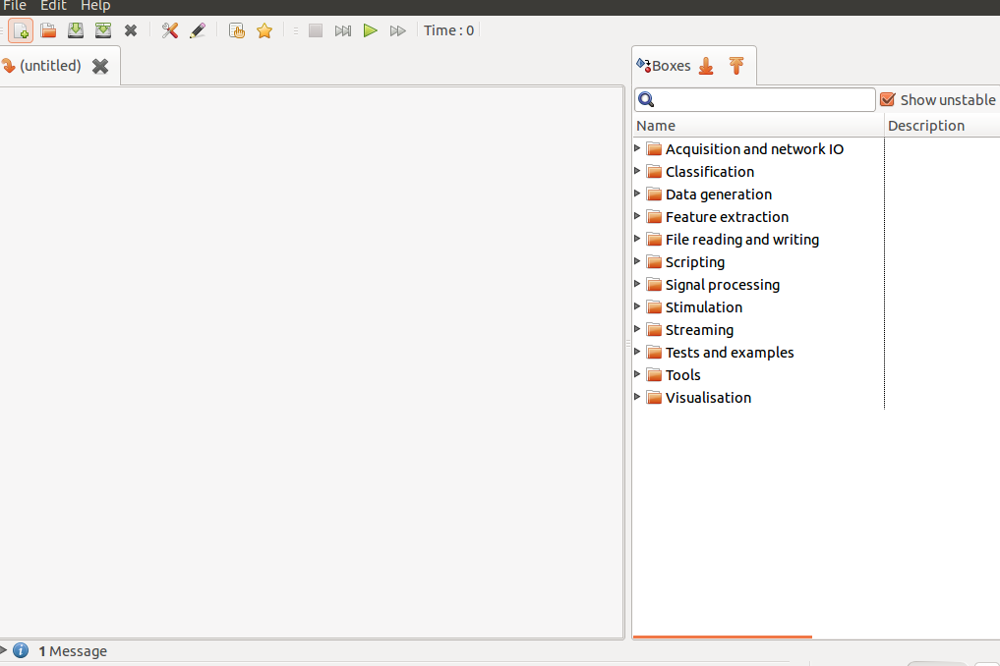,10) def test_createSimpleScenarioAndRun(self): click(Pattern(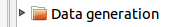).targetOffset(-70,-1)) dragDrop(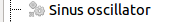,Pattern(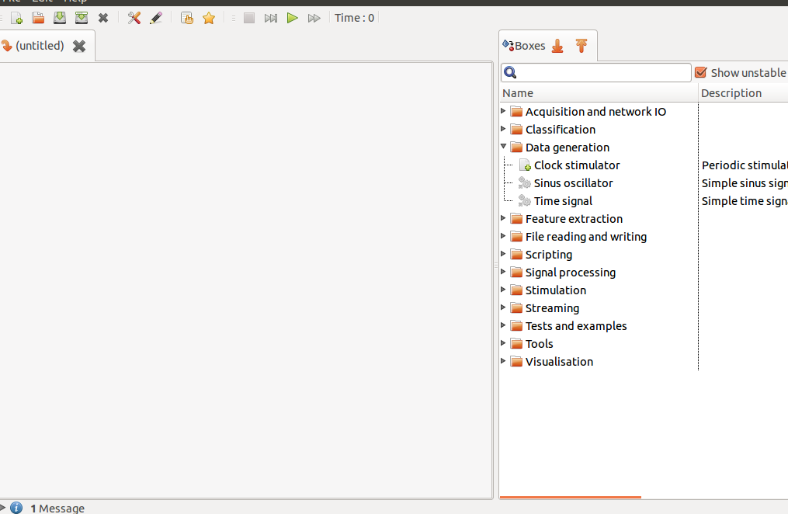).targetOffset(-233,-163)) assert(exists(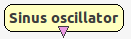)) click(Pattern(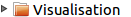).targetOffset(-62,0)) click(Pattern().targetOffset(-50,-1)) dragDrop(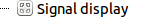, Pattern(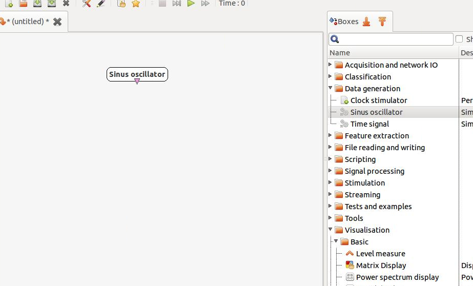).targetOffset(-197,-16)) assert(exists(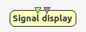)) dragDrop(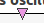, 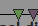) click(Pattern().similar(0.95)) wait(6) assert(exists(Pattern(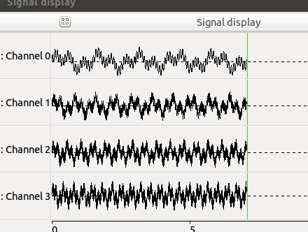).similar(0.46))) dragDrop(Pattern().similar(0.46).targetOffset(2,-157),Pattern().similar(0.46).targetOffset(-102,137)) click(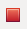) waitVanish(Pattern().similar(0.58)) type("w",KeyModifier.CTRL) assert(exists(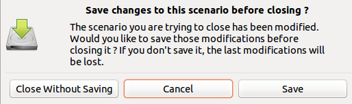)) click(Pattern().targetOffset(-170,56)) waitVanish(Pattern().targetOffset(-170,56)) def test_boxSetAtributes(self): click(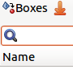) paste("sinus") dragDrop(,Pattern().similar(0.40).targetOffset(-233,-163)) rightClick() click(Pattern(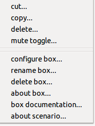).targetOffset(-51,16)) assert(exists(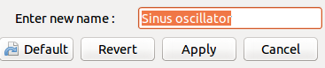)) type("XXXX XXXX XXXX"+ Key.ENTER) assert(exists(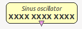)) def tearDown(self): App.close(self.terminal) self.terminal= None wait(2)